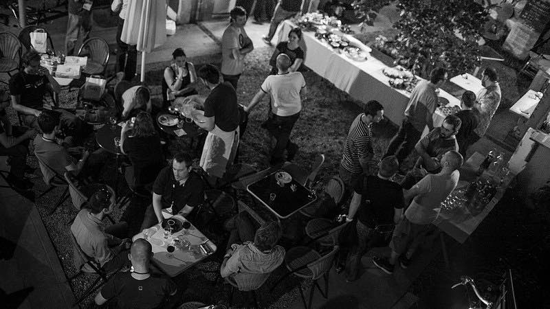
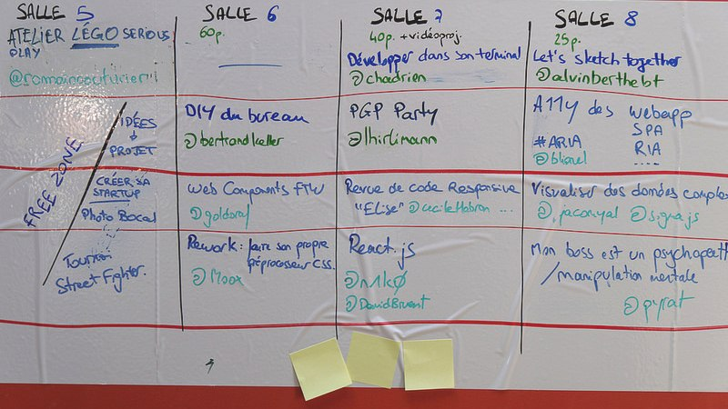

Jeudi
Le soir : la veillée
Soirée ouverte à tous, rendez-vous au Oh La La Bar à partir de 18h.
Soirée ouverte à tous, rendez-vous au Oh La La Bar à partir de 18h.
Une journée rythmée par des présentations, un débat et des pauses gourmandes.
Place à l'action : participants et orateurs auto-organisent leurs expériences et activités pratiques.
Journée informelle pour continuer les discussions en marchant et mangeant dans Montpellier.
Ce que ça donne en vidéo :
Le Web est plat, car fréquemment visualisé sous forme de listes, que ça soit
à cause des 20 premiers résultats sur Google ou nos bonnes vieilles
balises <ol>, <ul> et <li>.
À partir d'une page Web, nous prendrons de plus en plus de recul pour observer
la galaxie Internet ou plutôt … sa structure en graphe et ce qu'elle
reflète de nous.
Créateur de datavisualisations chez Atelier Iceberg et auteur de sigma.js.

Quel est le rapport entre l'algorithme d'images similaires de Google et les Tournesols de Van Gogh ? C'est ce que l'on découvrira en 20 minutes, ainsi que l'impact des algorithmes sur notre perception du monde.
Stéphanie a officié en médiation culturelle et numérique pour la Gaîté lyrique et est auteure dans la revue Nichons (nous dans l'Internet).
Est-il possible de concevoir des datavisualisations sans savoir coder
et sans utiliser Photoshop ?
Pour Agnès, c'est un parti pris : celui de l'artiste, celui de la citoyenne
mais aussi celui de l'imperfection et de la tendresse du medium.
Agnès est artiste et cartographe, notamment pour le Monde Diplomatique et Visionscarto.
5mn de ressources artistiques pour nourrir et impulser son projet : énergie, exploration, singularité, poésie, impertinence.
En me basant sur un cas concret de refonte d'onboarding, je vous partagerai les méthodologies et outils utilisés.
Aaaah, le board. Depuis qu’il trône fièrement dans l’open-space, il alimente des conversations salaces, il impressionne tous les clients qui viennent visiter nos locaux et accessoirement nous permet d’avoir une visibilité en temps réel sur nos sites e-commerce. Ce board, on en a rêvé pendant trois ans. Et on l’a fait en deux jours. Récit.
Comment construire un discours commercial gagnant-gagnant ? En 5 minutes, je vous montrerai que retourner le problème de la relation commerciale aide à une meilleure rentabilité. Résultats garantis.
Qu'est-ce que la compression sans perte (lossy) ?
Comment fonctionne le format PNG ?
Et comment ces deux là peuvent-ils cohabiter ?
Nous verrons ensemble comment des techniques et algorithmes des années 1980 en sont arrivés à améliorer les performances de compression dans Photoshop.
Kornel est ingénieur Web au Financial Times, auteur d'ImageOptim et pngquant.
Lucile nous emmène en voyage au pays du pixel art : de l'illustration papier au GIF animé en passant
par les séries d'animation et les objets physiques.
Elle nous racontera son parcours et pourquoi le pixel est un choix et non plus une contrainte –
et dire que tout a commencé suite à une partie de Sword and Sworcery !
Illustratrice et animatrice freelance, pixel art et dinosaures.
Retour d'expérience sur la modernisation de la presse quotidienne : du mono-support papier au multi-supports numériques, on parlera de design responsive avec des publicités qui ne sont pas responsives et d'accompagnement au changement d'équipes qui n'ont pas demandé à subir de tels bouleversements.
Renaud est directeur artistique au sein du groupe Sud Ouest, illustrateur freelance et amateur de Welsh corgi.
Le design d’expérience utilisateur est un processus de recherche, d’imagination, de conception, de création, de test et d’optimisation. Ce n’est pas un métier. Il reflète plutôt une diversité de compétences. Que se cache-t-il sous l'intitulé “designer d’expérience utilisateur” ?
Le Web s'invite dans les objets de notre quotidien. Allez-vous les acheter tout prêt ou à l'instar de votre premier PC ou premier blog, les créer par vous-même ?
Tu débutes à la guitare électrique, tu veux t'acheter des pédales d'effets mais les prix te donnent envie de repasser à la flute à bec ? Laisse béton : avec HTML5, tu peux avoir toutes les pédales que tu veux ! Petite démo de Web Audio API en condition live.
Dans un email, les mots importent tout autant que le moment. Des images, des liens pour aller encore plus loin. Réfléchissons ensemble comment donner envie à l’autre de cliquer sur ‘Répondre’.
Dans un monde qui va vite et dans un environnement en constante mutation,
il est aisé de se blamer : pas assez bien, pas assez vite et y'a meilleur que soi.
Il existe des mécanismes pour envoyer des signaux positifs à son propre cerveau,
en passant par la dimension physique de notre corps. Laetitia nous
expliquera ce data binding entre le corps et l'esprit.
Psychologue clinicienne à Londres le jour, chef cuisto de produits cosmétiques la nuit.
Chaque année, le débat occupe une place forte et prend une forme différente.
Cette année, pas de caméras pendant une heure. Nous posons un cadre pour aider les participants à communiquer les différentes émotions qu'ils ont pu ressentir dans le cadre du travail, pour mieux se comprendre et coopérer.
Les conversations continuent dans la joie et la bonne humeur, un verre à la main, entre participants, orateurs et organisateurs.

Les participants se réunissent en petits groupes et utilisent papier, stylos, feutres et ordinateurs pour interagir, échanger, partager et construire.
Ce que ça donne en vidéo :
